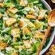

This salad is one of the best out there. With this step by step tutorial, you will be able to create a caesar salad that invites the whole family over. Figuratively, the salad unfortunately does not have a phone to invite people over.
- Romaine Lettuce
- Parmesan Cheese
- Croutons
- Caesar Dressing
- Preheat the Oven
- Cut the Baguettes
- Combine 3 TBSP of extra virgin olive oil and 1 TSP of finely minced garlic
- Drizzle the Garlic Oil over the Croutons and Sprinkle the top with 2 TBSP grated parmesan cheese
- Toss the Mixture and Bake
- Whisk Garlic, Dijon, Worcestershire, Lemon Juice, and Red Wine Vinegar together in a small bowl
- Drizzle Extra Virgin Olive Oil in the bowl
- Whisk 1/2 TSP Salt and 1/8 TSP Black Pepper
- Rinse, Dry, and Chop the Romaine Lettuce
- Place in a Large Serving Bowl and Sprinkle with Shredded Parmesan and Croutons
- Drizzle with Caesar Dressing until it is evenly coated
- Enjoy
Return To Top
Return Home